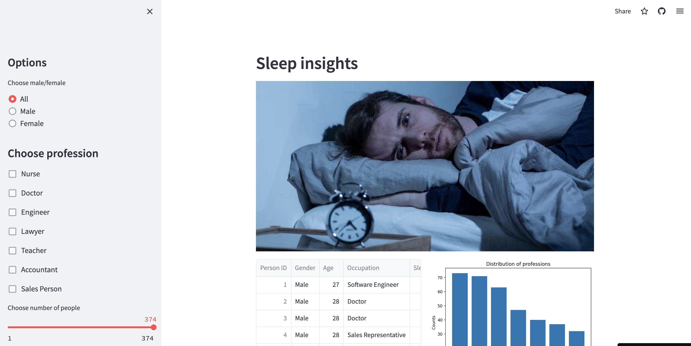

Apart from the calculations of basic statistics, I identified hotspots, determined regions with the highest total deaths and total cases.
I displayed total death rate in Kazakhstan for the entire given period.
This project helped me by analyzing trends and patterns to understand the broader implications of the pandemic and to do comparative analysis with other relevant datasets and sources.
Dataset contains the global information about COVID-19 data from February 2021 up until October 2022
Check my dashboard in Tableau

At first, I explored the data and handled some missing values. Then displayed plots to see complex correlations between variables.
Then I overlayed scatter points with a linear regression model and looked for relationship trends.
I computed pairwise correlation by standard Pearson method and visualized it by heatmap. That's how I noticed that 'gross' and 'budget' positively correlated.

Firstly, I handled missing values, then standardized data format and finally removed duplicate data
Dataset uploaded in GitHub repository

Professional survey data has the information about survey takers. I showed their specializations, satisfaction with the current job, their favourite programming tools and other.
To open this project you need to be registered in Microsoft.
Program from this site checks currency rate of US dollar to Kazakhstani tenge and saves it into Excel file.
If dollar falls to the desired value, it sends email with notification that it's time to buy dollars.

It gives some sleep insights and contains the information about distribution of peoples' professions and sleep disorders, and also how sleep disorders correlated with other given features
You can read more about the dataset here.